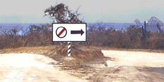

Image & Representation
Basic Concepts and Principles:
Establishing a clear relationship between a representation and its object
- icon - denotes its object by its own resemblance to the object
- index - refers to the object indirectly, by means of an association
- symbol - denotes the object by convention alone
One image may
not work alone - you can also combine them together through
- superimposition - one image on top of another
- conjunction - one image next to another
Practical
considerations
- physical size
- number of pixels available
- number of colours / levels of greyscale available
Animation adds more possibilities to icons but animation
draws attention and that can be distracting if too many thing on
your desktop / phone / TV etc are bouncing / twirling / pulsing /
inflating / blinking etc
Principles:
- Immediacy - should be recognized at a glance without having to
analyze it
- Generality - imagery is normally used to represent a class of
objects, not a particular instance - abstraction creates
generality
- Cohesiveness - images are not viewed
in isolation but as part of an overall system
- Characterization - function by focusing on essential characteristics
- Communicability - interpretation depends on the creator and
viewer sharing a common environment (physical, cultural,
conceptual)
A history of icons in GUIs
Common Errors:
- misleading syntax - what do these tell me?

answer: takeoffs and landings (plane viewed from the
top, arrow viewed from the side)
- using type as image
- using images for abstract concepts
hard to find appropriate images for abstract concepts
a - here is where balloon help is really useful to try and put
some text on the screen to ID these icons
b - boomerang for 'no-op'?
c - does the stairway suggest sort ascending and sort descending
d - step through a macro?
- culture or langauge dependencies
a- defaults, screen dump, C-shell, hello world
b - DOS icon is an image of the original IBM PC - remember those?
ever seen one?
c - debugger
d - (apple for the teacher?)
e - spelling
f - back burner
g - drag on
- offensive or suggestive imagery
a - kill icon from next-step
d - gestures are culturally based, gun for killing tasks